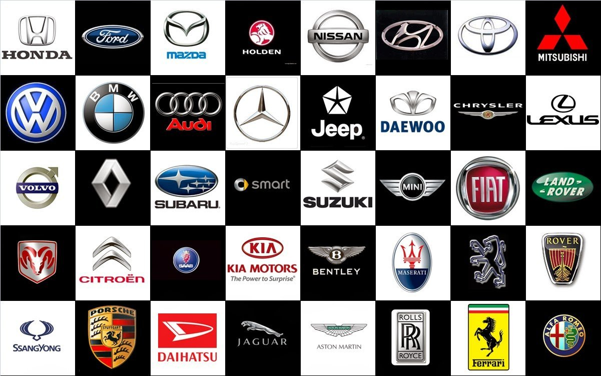

Скільки всього емблем автомобілів у світі
Емблеми автомобільних марок дуже різноманітні. На даний момент у світі їх існує величезна кількість. Вони отождествят якість продукції певної фірми-виробника. Не кожен автолюбитель визначить марку машини тільки по значку.Зображення знака має глибоку історію. Процес становлення будь-якого з них відбувався дуже довго, адже не кожне автомобільне підприємство починало відразу виробляти саме транспортні засоби. Тому значки, як і машини, постійно вдосконалювались. При цьому корені обох «зариті глибоко в минуле сторіччя.Слід зазначити, що емблем у світі стільки, скільки і марок авто. Всі марки автомобілів світу не можна перерахувати і порахувати. Ні в якому джерелі немає точної відповіді на це питання. Деякі автолюбителі налічують понад 2000 штук, а інші — близько 1300. Але це неофіційна інформація. Безліч марок випускаються в межах однієї країни, тому не всі люди знають про їх існування.На сьогоднішній день ніхто не відповість на питання, скільки саме зареєстровано автомобільних марок. При цьому найбільш відомих з них налічується понад 60 штук.У статті ви знайдете відповіді на питання про те, як утворилася автомобільна марка і що означає її емблема.
Відомі значки транспортних засобів — основні автомобільні емблеми світу
- Acura. Емблема нагадує кронциркуль. Простота рисунка пов'язана з тим, що на момент створення бренду в США було досить важко зареєструвати нову торгову марку. Офіційний реєстр логотипів містив безліч схожих товарних знаків.
- Alfa Romeo. Логотип складається з двох запозичених частин: червоний хрест на білому фоні і змія, що пожирає людину. Перший елемент здавна присутній на гербі міста Мілан. Другий — точна копія герба династії Вісконті.
- Aston Martin. Початковий варіант логотипу представляв собою переплетені літери А і М. Крила ототожнюють швидкість, притаманну випускається авто. На логотипі вони з'явилися лише в 1927 році, вони були запозичені у Bentley. Через рік було прийнято рішення надати їм модні обриси.У 1947 році логотип доповнювався ім'ям тодішнього власника — David Brown.
- Audi. Чотири кільця, використовуваних для логотипу, символізують злиття. Кожен з елементів уособлює об'єднані в 1934 році компанії, такі як Audi Automobil-Werke AG, Horch Automobil-Werke GmbH, Dampf Kraft Wagen і Wanderer Werke AG.